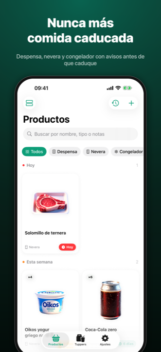
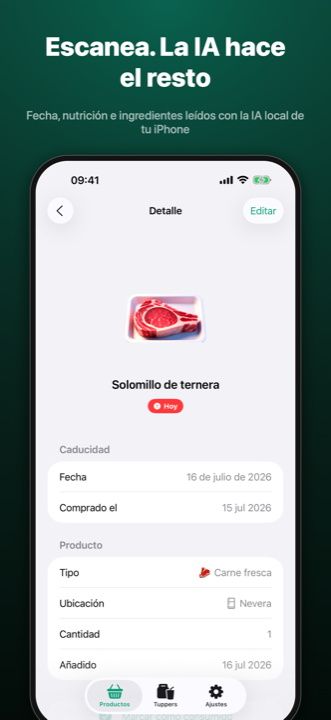
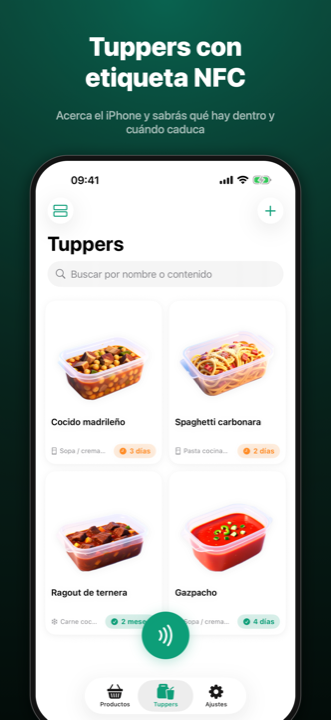
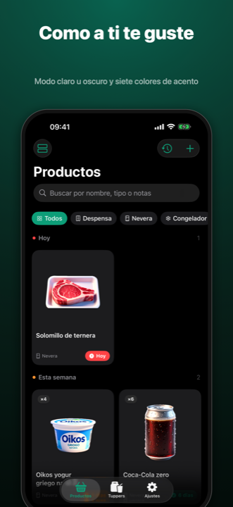

FreshTrack
Nunca más comida caducada. Tu despensa, tu nevera, tu congelador y tus tuppers — bajo control.
Próximamente en el App Store
iPhone y iPad · Gratis
Nunca más comida caducada. Tu despensa, tu nevera, tu congelador y tus tuppers — bajo control.
Escanea el código de barras y la ficha se rellena sola. Apunta a la etiqueta y la IA local de tu iPhone lee la fecha, la nutrición, los ingredientes y los alérgenos — sin que nada salga de tu dispositivo.
Código de barras o QR con búsqueda online, y lectura de la etiqueta del envase con la cámara: fecha, lote, nutrición e ingredientes.
Apple Intelligence interpreta la etiqueta y genera la imagen de cada producto en tu iPhone. Tus datos nunca viajan a ningún servidor.
Todo agrupado por urgencia — caducado, hoy, esta semana — con un aviso diario resumido y un widget para verlo de un vistazo.
Pega una etiqueta NFC regrabable en el tupper y acerca el iPhone para saber qué hay dentro y cuándo caduca.
Cada casa con su despensa, sus tuppers, su lista de la compra y sus ajustes. Sincronizado con iCloud entre tus dispositivos.
Lo consumido pasa al historial y de ahí a la compra con un gesto. Al volver del súper, escanea y recupera el producto con todos sus datos.




FreshTrack no recopila ningún dato. Todo vive en tu dispositivo y en tu iCloud privado; la IA funciona en local y la búsqueda de productos solo envía el código de barras, sin identificarte.